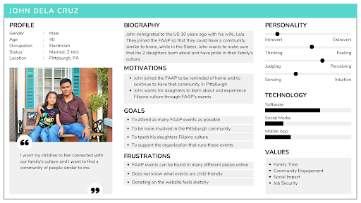
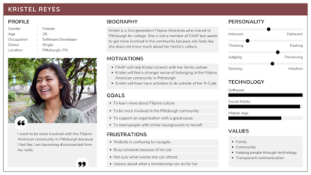
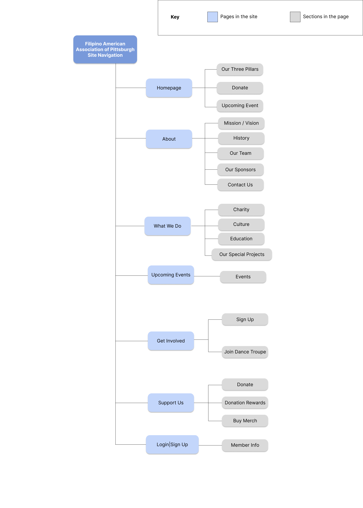

For my 05-391 Designing for Human Centered Software course, I was tasked to design an interactive app prototype that would benefit Carnegie Mellon University students. After brainstorming several ideas, I decided to design an app that would help students locate free goods on campus. This was inspired by the “Free Food CMU” GroupMe, where students share the location where free food is given out on campus. However, this app would be more accessible and provide advanced features, such as a map, a calendar, and content personalized for the user.
Problem
After communicating with the client and examining their current website, we concluded that the three main problems of their website was:
An inconsistent and confusing navigation system
Text heavy pages with difficult-to-scan information, and
Dated layout and aesthetics.
To alleviate these issues, we aimed to:
Create a cohesive navigation bar
Design a modern layout that emphasizes the organization's core values
Code a responsive website for desktop and mobile
Preliminary Research
We conducted a competitive analysis of other websites, focusing on cultural organizations like the Organization of Chinese Americans, the Italian American Association, and the Jewish Federation of Greater Pittsburgh. Overall, we found that the best strategies to present information and attract user interactions are to:
Reduce the overuse of text to make information more scannable
Include vibrant colors to highlight important information. and
Use suitable background colors that account for content contrast and images.
We also identified the three target audience groups:
Current members, who will have a stronger focus on learning about upcoming events and making donations because they are already familiar with the organization.
Prospective members, who will need more information about the organization.
Donors or foundations, who will need more information specifically on the community impact of the organization.
User Personas


Tree Diagram
In order to create a cohesive navigation, we organized the site's content using a tree diagram.

Early Designs & User Testing
Using Figma, we developed low-fidelity wire frames for desktop and mobile for each page of the website.
These wireframes were used for a preliminary user testing. We asked users that fit the target audience to describe their initial thoughts on our designs and complete task scenarios. Some recurring problems we've noticed were:
Confusion with the placement of the organization's contact information
Lack of information about the organization in the Support Us page
Difficulty of accessing upcoming events beyond what is listed
Refined Wireframes
Following user testing, we aimed to address the uncovered issues. We created high-fidelity wireframes, focusing also on color, font, and image choice.
Our solutions to address the previous issues were to:
Include the contact information at the footer so that it is easily accessible on every page
Add a button that would direct users from the Support Us page to the What We Do page
Implement a Google Calendar that was easy to maintain and add events
Final Prototype
Our final coded prototype only incorporates the homepage, About Us page, Upcoming Events page, and the Support Us page, due to the scope of our project and the requirements of the client. We utilized HTML, CSS, Bootstrap, and Javascript.